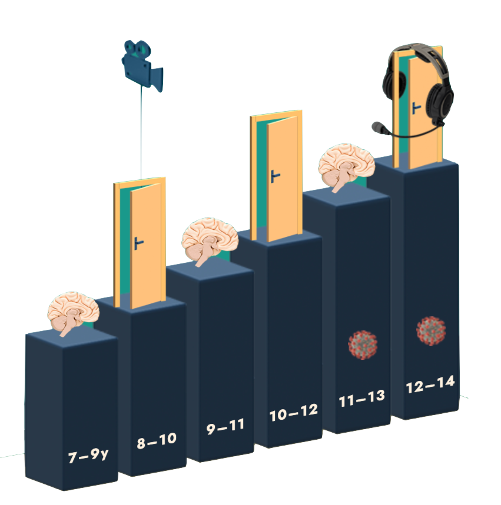
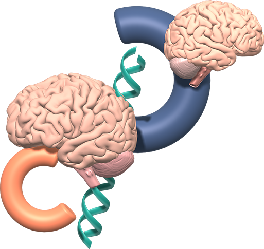

Measures collected
An interactive infograph of all measures collected over the course of 6 data collection waves, for all cohorts.
Measures table
A filterable and downloadable table of all measures collected over the course of 6 data collection waves, for all cohorts.

MRI measures
Summary plots of all MRI measures collected during three waves for all cohorts.